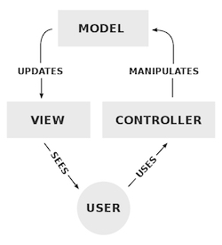

We're almost at the end of the at-home period of DevBootcamp, and this week was mostly a continuation of the JavaScript we started in week 7, along with just a touch of an introduction to MySQL and relational databases in general. But DBC hasn't directed us to write about any of that this week, but rather to pick one subject out of a list of 16 choices they gave us, all of them dealing with other issues in the programming world that we will undoubtedly be coming across and dealing with after we graduate and get out into the real world, and to do a little studying of that subject in advance so that we can explain the generalties to a non-techie.
In fact, I was excited about doing this week's entry; because one of the possible subjects is Rails, a web framework system that some smarties figured out how to marry to the programming language Ruby last decade, and that has resulted in this really powerful one-two combination that is now the backbone behind such famous websites as Shopify, Groupon, Bloomberg, AirBNB, SoundCloud, Square, Hulu, Goodreads, and the early versions of Twitter. It's the combination of "Ruby on Rails" that we're here at DevBootcamp to mostly learn (along with such smaller subjects as HTML and CSS for making it look nice, AJAX to get it to interact, Git to keep track of the changes, Sublime for coding it, etc); but all we've gotten to do in these first nine weeks so far is the Ruby part, all theory and no practice, all homework and no actual working webpages, so I'm chomping at the bit to learn the Rails part as well, and finally be able to start actually building workable things from all this theory and rote memorization we've been taking in over the last two months. And besides, I learned the hard way that DBC doesn't give you a nice gentle introduction themselves when introducing a new technology into your life, but rather just has you start using it before they bother telling you the first thing about what it is and what it's for; so I thought I'd save myself some headaches this time and read up on the generalities and history of Rails myself, so that I at least have some context for understanding what's going on when we start getting into it for the first time. So needless to say, I may end up getting some of this a little wrong, and I always appreciate people dropping me a line at ilikejason [at] gmail.com and letting me know; but hopefully the following will prove to be a pretty realistic look at what we'll be getting ourselves into a little later this spring. And in fact, just like always, let's start way back at the most simple level we can, and work our way forward from there...
To begin with, what are we really talking about when we talk about a person interacting with a website? Well, ultimately you're talking about two computing systems -- the one holding the HTML pages (and other associated stuff) making up a website, typically stored on a standalone server (one of thousands you might find in a super-cooled warehouse, for example), which unsurprisingly is called the server side of the equation; and the home desktop or laptop or tablet or phone that the end user is using, typically called the client side. And back when the web first started out, their relationship was extremely simple -- the server side held all the content, content that never changed unless the programmer manually changed it by hand, and it was sent one page at a time over to the client side, whenever the end user clicked on a link that asked for the next page to look at. But then came the mighty "Dot Com" age of the 1990s, when a million corporations took these crude controls from this former closed community of scientists and professors, and started loudly complaining about how little you could do when it came to the look and feel, instant interactions, and all the other bells and whistles a place like Pringles.com might need that a couple of nuclear scientists wouldn't.
That led to the invention of web application frameworks, started by the creation of the Common Gateway Interface (or CGI), a way for the client to be able to provide information and have the resulting HTML page be rewritten on the fly by the server itself before being delivered, when up to then this could only be done by the human programmer opening that TXT file and hand-typing new code themselves. So for example, this let the user ask for something specific from a big huge online database, so that the server-side could go look up that information, push it into blank spots in an HTML template, and send that revised page to the user for looking at in their browser; and this led finally to the ability for websites themselves to start acting in the practical, sophisticated way that any piece of software on your home computer might, leading to the term "web applications." (For a good example, think of how efficiently you can now manipulate your bank account straight through a website; you have web application frameworks to thank directly for that. And since most mobile apps are little more than a specialized standalone version of a web app, you have web frameworks to thank for most of your iPhone apps too.)
Rails is one such framework, invented by David Hansson in 2004 while an employee at the great Chicago tech company 37signals, designed specifically to work with Ruby; so it basically tells the end user and the backend's database how to communicate with each other, mixes in Ruby commands to manipulate these requests and results, and mixes in the components of JavaScript (including jQuery) to allow for fun real-time updating of the computer screen by the end user. So as such, there are a number of things associated with Rails that basically define it, some of which are a definition of all web application frameworks, while some are the specific things about Rails that makes it so passionately championed by so many people. This can get kind of confusing, so let's take these things that define Rails one at a time and examine them for the real-world objects they are...
Full-Stack Framework. A "stack" in computer programming is quite literally a pile of information, perhaps like a database or what programmers call a "library" of prewritten commands for a certain language. Frameworks will in fact often pull in such libraries and databases to get things to work right (but see "Reuse Common Code," below); and when a framework has gone to all the trouble of actually including all those various stacks of information you'll need to call on, right during the installation itself, this is known as a "full-stack" framework, and one especially worth your time and money.
Model-View-Controller Paradigm. Most web frameworks are based around a "way of thinking about itself" much like the illustration you're seeing here -- that there is a "model" of how things should work, hosted on that server space where the website is, and a human being or "user" over on the client side interacting with it, sending in inputs and requests through a controller and getting outputs and results that they can view. Everything about Rails is designed to chunnel through this particular kind of workflow, and most of the things you'll ever do in Rails involves the user giving an input, the model doing something with that input, then the model outputting the results back to the user to view (or hear, etc).
Convention Over Configuration. There's a strong overlap between Ruby developers and those who believe in the coding philosophy known as "agile" programming (but see my previous blog entry about that for more); and one of the things these people believe is in causing as little extra work for yourself as possible, so to get through the most amount of productivity with the minimum of effort, a big deal when you're talking about potentially writing a million lines of code over the course of half a decade or more. And thus the paradigm of "convention over configuration" in Rails -- that if something is already defined and set up, just use that again, and Rails will by default revert to the old behavior you already defined for that thing, if it doesn't specifically come with its own new configuration file.
Reuse Common Code and Don't Repeat Yourself. And similar to this, another big edict in agile programming is to reuse common code; hence web frameworks' reliance on existing libraries that have been built over the years, as well as the general advice endemic to all programming, that if you've typed the same exact command twice when you could simply refer to it two times, you've done yourself a big disservice and are just wasting your own time.
Active Record Pattern. The way many web frameworks actually interact with a database, and very specifically in the case of Rails, is through the creation of classes in the actual Ruby programming, something else I've already looked at in a past blog entry; the class is then filled with variables that match the records of the database's columns, and when the end user wants a particular record, Rails simply pushes the fields of that record into the variable slots of that class. That then lets the programmer take that class and do all the complicated, powerful stuff you can do with classes in Ruby, simply spitting out the modified results at the end for the end user to look at on their computer screen; then when they're ready to call something else up, Rails simply empties that class again, and gets it ready for its variables to be temporarily filled with yet new information.
Client-Side Interactions. And then another big thing that's happened fairly recently in the history of websites is that it's no longer server-side things that are getting changed based on user input; some of these frameworks specifically send instructions to the client's side of the equation, the web browser itself, for what to humans looks like instant updating of a webpage without any refreshes. You know how when you click on a "Like" button at Facebook, you immediately get a little blue thumbs-up and a number next to it? That's client-side interaction at work, fueled most popularly through an asynchronous combination of JavaScript with specialized XML commands, whose initials make up the protocol AJAX. Rails has the AJAX commands built into its framework from day one, part of the "full-stack" capabilities we were talking about before, through the library jQuery which I am studying for the first time next week (so more then, I promise).
Web Templates, Web Security, and URL Mapping. And then finally, a common feature among almost all web frameworks is that they house various templates for the outputting of HTML pages -- so pages that look pretty much like normal HTML pages, but instead of content might have just little symbols standing for placeholders in the database, with new information pushed into those placeholders each time a user requests something specific. And with this, frameworks also have to worry about web security, and most offer a way of having sensitive information in your database (like passwords, credit card numbers, etc) so that they can't be access by the public at large. And finally, these frameworks have a way of generating a unique URL for each page they generate, which for those who don't know is like each webpage's unique address; and sometimes this is a line full of gobblety-gook, for when you're pulling up some temporary info that you'll be discarding again quickly, while sometimes the framework will generate a much more sensible URL that's easier to remember (like when you see a blog entry's archive page stored somewhere like "website.com/archives/2015/march/mypost.html").
And there's a lot more we could talk about -- oh Lord, is there always a lot more we could talk about in computer programming -- but this should hopefully give you a good idea of what we're discussing when we discuss web application frameworks and Rails in particular. And it's funny, because now that I've finally researched it myself, I realize that I've already been interacting with and programming for a web application framework for ten years now -- ever since 2005, I've been running both my personal website and my arts center's website through a "content management system" (or CMS) called MovableType, and CMSs (like this, WordPress, Blogger, etc) are nothing more than web application frameworks themselves, only highly specific ones that exist only to help you interact with your blog's database without you needing to be a programmer yourself. Basically, anyone who updates a blog through a CMS goes through the exact process we just looked at above -- you make a bunch of inputs into specific fields on a web page full of blank windows, then when you press "post" the CMS's model takes all that information, in the form of a new class instantiation, and pushes it to your master database where all your blog posts and images are stored, loads it into placeholder locations in a web template, then posts that template as a fully formed HTML page with its own unique URL. Rails is essentially that, just that you can use Rails to build whatever web thingie you want, not just a blog.
So is Rails right for you? Well, is German right for you? How do you know if you'd prefer to study Spanish instead, and maybe after that to pick up its related cousin Italian? These are the same exact questions you ask when deciding what programming languages to learn as well. For example, there's another programming language out there called Python that is very similar to Ruby, and another framework called Django that has almost the exact same relationship to it that Rails has to Ruby; or if you want to go back in time a little, there's the language/framework combo of Java and PHP from the 1990s, still around and still powering a whole lot of websites, and with there still being a lot of lucrative jobs out there for Java/PHP experts, just like there are lots of jobs right now for Python/Django people and Ruby/Rails people and C++/ASP.NET people and all kinds of other combinations that exist.
I in particular am learning Ruby on Rails, combined with JavaScript and AJAX, because that's what the school I'm enrolled in teaches; but to their credit, the reason they teach this in particular is because it's a particularly good thing to learn, an ultra-powerful combination that ironically is unusually easy to read and write (well, not objectively easy, as my dozens of head-poundings against brick walls in the last two months can attest, but relatively easy compared to learning something like C++), follows the logic of the human brain more closely than past languages, and for which there are a lot of big companies as clients who are in constant need of well-trained, well-paid programmers. (But don't take my word for it; see these much more well-thought-out arguments for Ruby on Rails from Daniel Kehoe and the Treehouse tech learning school.)
Next week, a look back at the entire "phase 0" at-home part of the DevBootcamp program that I am just finishing up now, and a look forward to the nine weeks I'll be completing down at the DBC classroom center in the River North neighborhood of Chicago, as well as the future fate of this class blog. Thanks as always for stopping by!